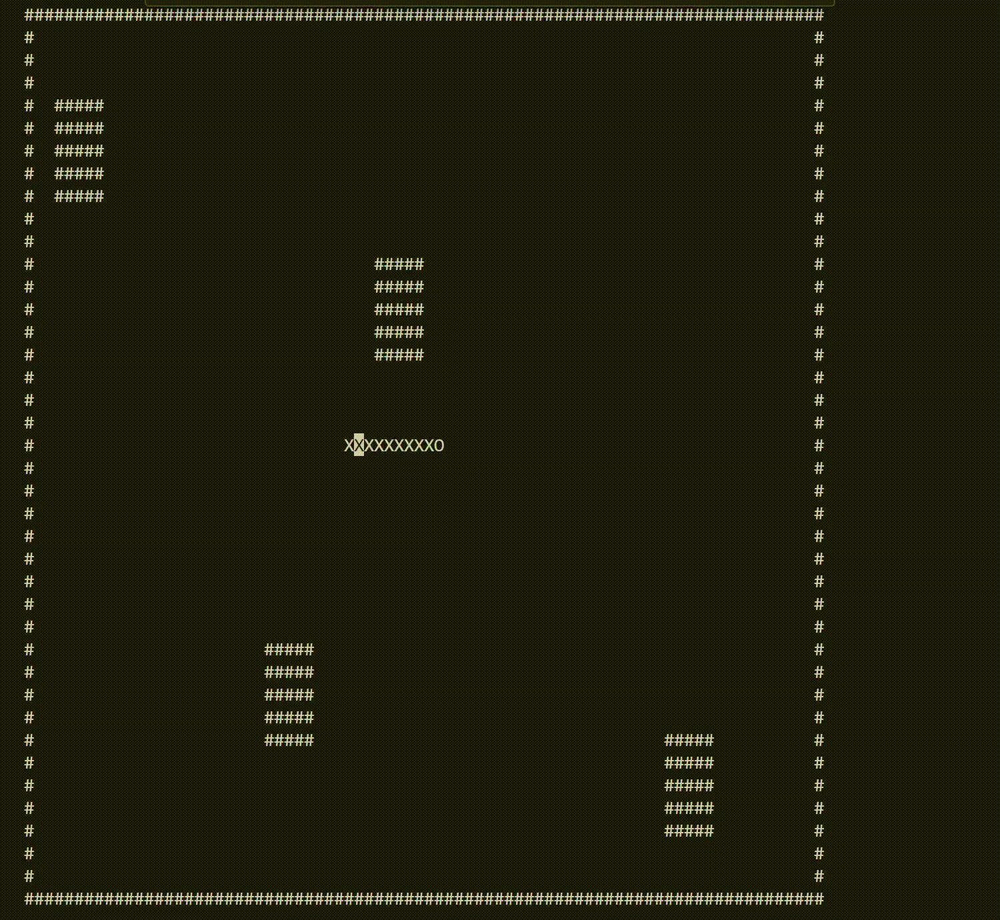

Systèmes informatiques
Ce projet a été réalisé en groupe. L'objectif est de créer des scripts afin de formater automatiquement des images et fichiers textes.
Compétence n°3 : Installation d'un poste pour le développement
Ce projet s'inscrit dans la compétence 3 du programme du BUT Informatique : Installer, configurer, mettre à disposition, maintenir en conditions opérationnelles des infrastructures, des services et des réseaux et optimiser le système informatique d'une organisation.
Les outils utilisés :
 Language PHP
Language PHP Language Bash
Language Bash Docker (pour transformer des document)
Docker (pour transformer des document) Language HTML (pour faire la page web)
Language HTML (pour faire la page web) Language CSS (pour ajouter du style)
Language CSS (pour ajouter du style) UTM (pour utiliser Docker sous MacOS)
UTM (pour utiliser Docker sous MacOS) Visual Studio Code (pour code avec les language)
Visual Studio Code (pour code avec les language)
Les étapes du projet
Le projet c'est derouler en 4 etape distinct.
Le serpent de taille fixe se déplace automatiquement vers la droite. L'utilisateur définit sa position initiale via les coordonnées (x, y). Le jeu commence ensuite avec un affichage dynamique dans le terminal.

Le serpent peut se déplacer dans toutes les directions avec les touches ZQSD. Le demi-tour est interdit. Le serpent peut se croiser et sortir de l’écran.

Le plateau de 80x40 est délimité par des bordures. Le serpent meurt s’il touche un mur. 4 pavés d’obstacles sont générés aléatoirement dans le cadre sans toucher les bords.
Le serpent mange des pommes représentées par ‘6’. À chaque pomme mangée : le score augmente, la taille du serpent s’allonge, et la vitesse s’accélère. À 10 pommes mangées, la partie est gagnée. Le serpent peut traverser le plateau via des passages sur chaque bord.